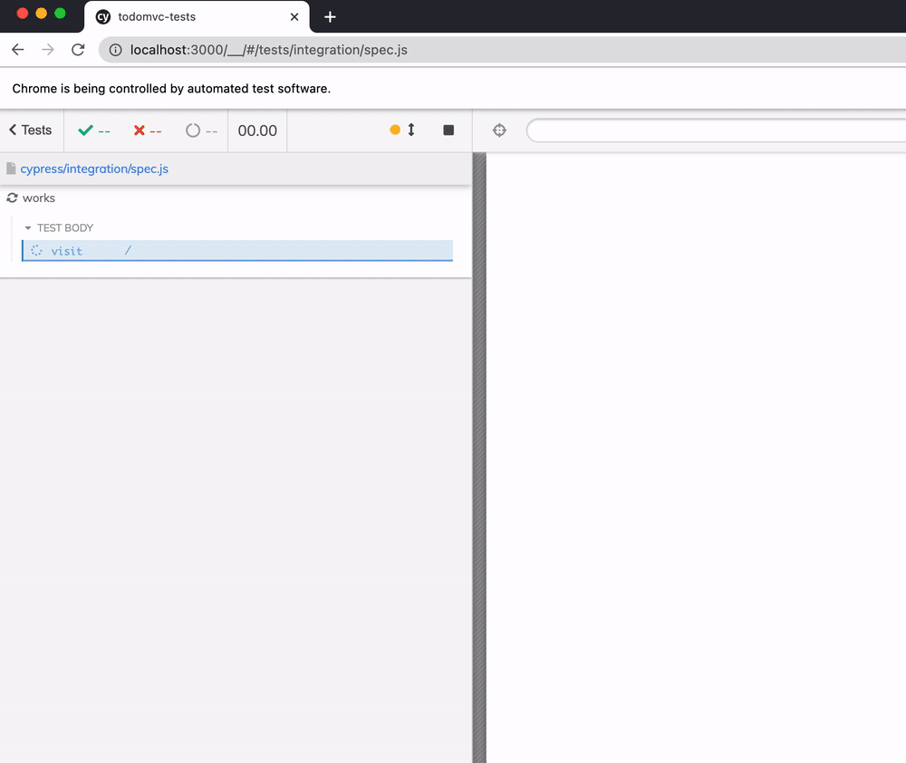

Imagine you want to start writing end-to-end tests for your web application, but it is hard to convince everyone on the team to include Cypress in the repository. Maybe you want to show the tests in action first. Maybe you want to solve technical blockers. You have decided to keep the E2E tests in a separate repository, at least at first. How would it work?
üéÅ You can find the example application in the repository bahmutov/todomvc-no-tests and its end-to-end tests in the repository bahmutov/todomvc-tests.
The app
Let's say we are writing an app and every pull request is automatically deployed to a preview environment. In this blog post, my application from repo bahmutov/todomvc-no-tests is deployed to Netlify https://todomvc-no-tests.netlify.app/ after build. Every pull request is also deployed to its own preview environment.
The tests
The tests live in another repo bahmutov/todomvc-tests and by default assume the application is running locally at port 3000.
1 | { |
We can start with a single sanity test that goes through the main features of the application.
1 | /// <reference types="cypress" /> |
The test passes

Netlify setup
The application itself is built and deployed to Netlify. I will use GitHub Actions to run E2E tests after each deploy. In the todomvc-tests repository I will configure a GitHub workflow that only runs on the workflow dispatch event.
To trigger the GitHub workflow after Netlify has finished the deploy, I will use my plugin netlify-plugin-github-dispatch. I will need to create a personal GitHub token with "repo" permission.
Then I set this token as an environment variable during the "build" step on Netlify.
Tip: make sure to keep Netlify to NOT allow the forked pull requests to run without review (which is the default), otherwise someone might steal your personal GitHub token.
Now create a new file netlify.toml in the application's repository to invoke the GitHub workflow after the successful deploy.
1 | # https://github.com/bahmutov/netlify-plugin-github-dispatch |
We need to install the plugin netlify-plugin-github-dispatch
1 | npm install -D netlify-plugin-github-dispatch |
When we first push the above code, the Netlify reports a plugin error after successful deployment - we have not created the e2e.yml yet!
Let's create our workflow - we need to check out code and run Cypress tests. We will NOT run the tests by default, only when someone dispatches the workflow_dispatch event. Note: this event can be triggered via API from Netlify or manually from the GitHub web UI.
1 | # .github/workflows/e2e.yml |
The above workflow is using cypress-io/github-action to abstract installing dependencies and running Cypress tests. We point Cypress at the deployed URL using baseUrl=${{ github.event.inputs.deployPrimeUrl }} syntax.
Tip: we could store the captured test run videos as GitHub test artifacts, or record the test results on Cypress Dashboard. I prefer the Dashboard since it provides a lot more information and is easier to use.
How to work in two repos
Now that we have the Netlify deploys and GitHub workflows configured, let's see how we can work day to day. I assume you are using feature branches for deployment. Then you open a pull request to merge the new feature to the main branch. If all tests pass, and if the reviewers agree, the feature is merged into the main branch. Here is how to use E2E tests together with the feature work.
- Pull both repos to the local machine.
- Open a branch in the application repo and a branch with the same name in the tests repo.
For example, let's improve the selectors in our application so our tests can find DOM elements following the Cypress' best practices. I will name the branches better-selectors.
1 | ~/git/todomvc-tests on main |
I will update the application and the spec while running Cypress to make sure the tests pass locally. The test has changed some of the selectors
1 | - cy.get('input[type=text]').type('Add tests!{enter}') |
- Commit and push the tests first. You can even open a pull request in the tests repository. Remember, these tests do not run on commit, and they do not run on pull request. The tests must be triggered in order to run.
- Commit and push the application branch
better-selectors. Because this is not the main repository branch, Netlify does nothing. - Open a new pull request and Netlify will trigger the preview deploy.
If you look at the Netlify deploy logs, the plugin netlify-plugin-github-dispatch triggers the workflow E2E using ref: <branch name>. Thus GitHub runs the workflow in the same branch name as the first repo branch.
Note: if there is no branch with the same name, the dispatch will fail.
- The GitHub Actions tab shows the triggered workflow.
We can drill into the E2E job to see Cypress output.
We can go to the shown Cypress Dashboard URL to watch the video of the run or see the captured screenshot. Notice the updated data-cy selectors in the Command Log and the preview URL.
Tip: we can post the status check from the tests job back to the app repo, see the section at the end of this blog post.
If the tests are passing or not, I would put the link to the tests PR in the description of the application PR to let the reviewers see the updated tests together with the application code change.
Now that the tests are passing, let's merge the tests and the code change.
- First merge the updated tests. Remember - the merged tests are not going to run, unless the workflow is triggered.
- Merge the updated application. The deploy to the main branch will trigger the tests already merged to the main branch (I assume both repos use a matching main branch name).
Manual trigger
If for some reason you want to re-run the tests, you can trigger a re-deploy on Netlify. Or you can trigger the workflow manually using the GitHub UI. Go to the Actions tab, pick the E2E workflow and click the "Run workflow" button. Change the inputs to what you desire and start the workflow.
Status checks
We have two separate repositories, thus we need to manage status checks ourselves. The application repo as soon as there is a pull request can post a pending status check on the merge.
1 | # in repo bahmutov/todomvc-no-tests |
This check will be "pending" thus the reviewer knows that the tests have not finished.
In the tests repository we can use similar code to set the status check in the original repo. We will get the merge commit SHA from the optional workflow input parameter commit - this parameter will be set by the netlify-plugin-github-dispatch code when it calls the workflow. Here is the entire workflow file from the test repo:
1 | # todomvc-tests repo |
We need to use our personal GitHub token to set the status in the first repository. The status check step runs every time. Here is how the pull request in the first repo looks when the Cypress tests have failed.
The "details" link opens the Cypress Dashboard URL.